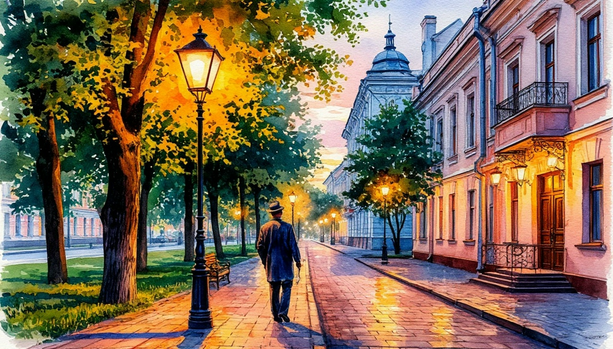

МЕГА-ТУР. Всё лучшее в Беларуси.

Даты тура: 30 апреля - 4 мая | 7 - 11 мая | 4 - 8 июня и далее каждый четверг
Стоимость тура:
- 32 300 р. - взрослый
- 32 100 р. - пенсионеры/школьники
- 37 300 р./чел - одноместное размещение
По программе:
- - Обзорная автобусно-пешеходная экскурсия по городу-герою Минску
- - Обзорная экскурсия по Беловежской пуще
- - Обзорная экскурсия по Бресту
- - Обзорная экскурсия по Несвижу
- - Экскурсия в Несвижском замке
- - Обзорная экскурсия по Миру
Программа тура:
1 день:
- 13-00- выезд из Костромы от ТРЦ "РИО" (Ул. Магистральная, 20), правый угол от центрального входа
2 день:
- Прибытие в Минск. Встреча с гидом.
- Завтрак в кафе города.
- Обзорная автобусно-пешеходная экскурсия по городу-герою Минску.
- В ходе экскурсии Вы увидите архитектурные памятники исторической застройки старого города - костелы Девы Марии и Красный, мужской и женский бернардинские монастыри, Торговые ряды, Ратушу. Незабываемое впечатление оставит прогулка по восстановленному Троицкому предместью - старинному кварталу XVIII-XIX вв. Живописные изогнутые улочки, уютные кафе в старинных зданиях, дома ремесленников, галереи художников. Динамичный современный облик Минска. Уникальная знаковая архитектура главной улицы - памятника градостроительного искусства XX века - проспекта Независимости. Площадь Победы и Национальная библиотека, включенные в список наиболее выдающихся архитектурных строений современности.
- Далее вы отправитесь в Торговый центр «Столица», который является воплощением идеи национального богатства и многообразия. Здесь представлены лучшие отечественные бренды"
- Свободное время на осмотр и покупку продукции. Обед программой тура не предусмотрен.
- Переезд в Барановичи. Размещение в гостинице.
- Свободное время.
3 день:
- Завтрак в отеле
- Отправление в Беловежскую пущу.
- Национальный парк «Беловежская пуща» по числу видов растений и животных не имеет себе равных в Европе. В пуще обитает самая крупная в мире популяция зубров. Вы сможете увидеть уникальную природу этого древнего лесного массива. Обзорная экскурсия по Беловежской пуще с посещением вольеров с животными. Здесь можно увидеть рысь, лисицу, косулю, благородного оленя, зубра, волка, лося, дикого кабана, а также енотовидную собаку и пятнистого оленя. Поражает сочетание богатого растительного мира и изумительных ландшафтов.
- Отправление в г. Брест (Беловежская пуща - Брест: 55 км).
- Обед.
- Обзорная экскурсия по Бресту. Посещение знаменитого мемориального комплекса "Брестская крепость – герой" - памятник мужеству и героизму воинов Красной Армии. Осмотр Брестской крепости. Экскурсия по территории крепости.
4 день:
- Завтрак в отеле. Освобождение номеров.
- Выезд в Несвиж.
- Обзорная экскурсия по Несвижу, на которой у вас будет возможность посетить знаменитый белорусский замок. Вы сможете оценить его мощь, прикоснуться к древним стенам, почувствовать дух минувших эпох.
- Несвиж - один из самых значимых в истории Великого Княжества Литовского город, увенчанный коронованным орлом Радзивиллов, самых могущественных магнатов княжества.
- Несвижский дворцово-парковый комплекс, включённый в список Всемирного наследия ЮНЕСКО, с разноплановой архитектурой и крупнейшим ландшафтным парком.
- *Экскурсия в Несвижском замке с экскурсоводом, либо аудиогид для каждого туриста (зависит от даты тура, уточняйте при бронировании). Осмотр дворцово-замкового ансамбля, построенного по проекту итальянского зодчего Джованни Бернардони, того самого, который участвовал в строительстве и реконструкции знаменитого собора Петра и Павла в Риме. Система оборонительных сооружений, превращавших дворец в неприступную крепость. Несвижский парк, каждый уголок которого наполнен таинственными легендами и мифами. Фарный костел (XVI в.), первый в Восточной Европе памятник в стиле барокко, усыпальница князей Радзивиллов.
- Обед.
- Далее мы отправляемся в Мир.
- Обзорная экскурсия по Миру. Входные билеты в Мирский замок - памятник оборонного зодчества Беларуси (XVI в.), внесенный в каталог мирового культурно-исторического наследия ЮНЕСКО, выдающееся произведение белорусского зодчества. Взору откроется богатый замок эпохи средневековья, своей монументальностью и неприступностью олицетворяющий силу и неограниченную власть феодала. Самостоятельный осмотр Мирского замка
- Отправление домой.
5 день:
Прибытие в Кострому в первой половине дня (ориентировочно)
В стоимость тура входит:
- - проживание в гостинице*
- * Гостиница "Горизонт" 3*
- - питание: 3 завтрака + 2 обеда
- - услуги гида-экскурсовода
- - экскурсионная программа
- - автобусное обслуживание по программе тура
- Для бронирования необходимы данные паспорта РФ и свидетельства о рождении, если с вами путешествуют дети
- Предоплата – 50% от стоимости тура. Остаток за 30 дней до даты выезда.
- Любой тур можно оформить не выходя из дома. Подробнее: Тут
Стоимость тура не зафиксированы и могут быть изменены в большую или меньшую сторону в зависимости от уровня спроса в любой момент.
Время начала экскурсий и их порядок указано ориентировочно.
Фирма-исполнитель оставляет за собой право замены экскурсий без уменьшения общего объема экскурсионной программы.
По вопросам бронирования обращайтесь: